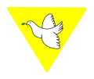

Vida en la Naturaleza

Acampador
- He acampado por lo menos cuatro noches.
- Empaco adecuadamente mi ropa dentro de mi
mochila antes del campamento.
- Acomodo cuidadosamente mi mochila, mi bolsa de
dormir o frazadas, para dejar espacio a los demás.
- Ordeno mis pertenencias y me preparo para las inspecciones
en un campamento
- Me lavo y cambio de ropa, si es necesario, luego de una
actividad al aire libre; asimismo, me aseo antes y después de
las comidas.
- Limpio el lugar donde acampé y llevo la
basura al lugar adecuado.
- Lavo mis platos, cubiertos, taza y ayudo a
lavar la vajilla común.
- Soy cuidadoso al ayudar a encender un
fogón.
- Ayudo a armar, bajar y doblar una carpa.
Amigo de los
Animales
- Cuido un animal.
- Observo y describo el comportamiento del
animal que cuido.
- Demuestro preocupación por el maltrato a los
animales y conozco las instituciones que los
protegen.
- Hago una exposición a mi Manada sobre las
características de una especie animal en vías
de extinción.
- Visito un zoológico y comento con mi Manada
cómo encontré los animales.
Jardinero
- Cuido un animal.
- Siembro algún vegetal que me sugieran en
casa, para compartir en familia.
- Explico cuáles son los enemigos comunes de un
huerto o jardín.
- Investigo quiénes son los amigos del jardín
(pajaritos, insectos que no dañan los cultivos, etc.).
- Mantengo al menos tres plantas
decorativas y las etiqueto con una
breve descripción.
- Utilizo adecuadamente las
herramientas básicas de jardinería.
- Señalizo con nombres y breves
descripciones algunos árboles y
plantas de un parque.
- Reconozco algunos árboles frutales
de mi región.
Observador
- Describo las señales de pista.
- Sigo el rastro indicado por señales de pista en
una ruta aproximada de 400 metros.
- Me desempeño bien en los juegos de KIM y soy
capaz de:
- VISTA: Observar 15 objetos diferentes y recordar 10
- OIDO: Con los ojos vendados, identificar 6 o más sonidos
de 10 emitidos.
- GUSTO: Con los ojos vendados, identificar 4 sabores de 8
degustados.
- TACTO: Con los ojos vendados, identificar 8 objetos de 15
presentados.
- OLFATO: Con los ojos vendados, identificar 4 de 8 olores.
- Describo los alrededores de mi casa: parques, instituciones,
tiendas, etc.
Ecólogo
- Cito algunos ejemplos de equilibrio
ecológico.
- Expongo un caso de contaminación ambiental
y propongo una solución.
- Creo un adorno u objeto decorativo utilizando
materiales reciclados.
- Cultivo una planta de manera natural: sin usar
productos químicos.
- Utilizo algún remedio natural
para calmar un leve dolor.
- Preparo con algunos compañeros
un proyecto sobre reciclaje.
Arte, Expresión y Cultura

Coleccionista
- Colecciono llaveros, stickers, estampillas,
monedas, o aquello que sea de mi interés y
demuestro que mi colección organizada aumenta
en dos meses.
- Ayudo a un amigo en la organización de su colección.
- Colecciono recuerdos scouts y los clasifico con breves descripciones.
- Visito al menos un museo y describo las colecciones que
aprecio en cada lugar.
Actor
- Creo y dirijo una barra para mi Manada.
- Sé cómo maquillarme o disfrazarme con imaginación
y sin gastar mucho.
- Actúo en alguna función de teatro o representación.
- Relato una historia novedosa, cuento o
recito una poesía que puede ser de mi inspiración.
- Llevo alegría a un enfermo o anciano.
- Creo un pequeño libreto, lo ensayo con mi seisena y presento la
obra en una celebración en mi Grupo Scout.
Lector
- Comento alguna de mis lecturas y sus autores.
- Leo una noticia y explico sus mensajes o significados.
- Utilizo correctamente el diccionario.
- Forro mis libros y los mantengo en buen estado.
- Me comporto adecuadamente en una sala de lectura.
- Ayudo a ubicar un libro en el fichero de una biblioteca.
Músico
- Dirijo entonadamente una canción en mi Manada
- Identifico las notas musicales.
- Ensayo una canción con mi seisena para una presentación.
- Asisto o escucho un concierto musical de mi preferencia.
- Describo por lo menos cinco instrumentos musicales.
- Demuestro mi habilidad interpretando una canción con un
instrumento musical.
- Comento la vida de un músico notable.
Artista
Plástico
- Realizo por lo menos dos actividades, que
pueden ser: pintura, escultura, cerámica,
origami, kirigami, etc
- Participo en un concurso de artes plásticas.
- Conozco dos técnicas de dibujo o pintura.
- Visito un museo, galería de artes plásticas
o un taller de artesanía.
- Obsequio uno de mis trabajos.
- Conozco la vida de dos personajes destacados de
las artes plásticas y lo comento en mi Manada.
Folklorista
- Conozco sobre el folklore de mi región o país,
describiendo un baile o danza y sus trajes
típicos.
- Bailo una danza típica de mi región.
- Describo tres platos típicos de mi región
(comidas, dulces o postres, etc.)
- Asisto o veo un evento artístico-folklórico.
- Conozco algo del folklore de otra región o país latinoamericano
(comidas, bailes, vestimenta, etc.).
Servicios a los Demás

Servicio
Doméstico
Primeros
Auxilios
Orientación
Seguridad
Remendón
Actividades Físicas

Nadador
Deportista
Atleta
Artes Marciales
Ciclista
Ciencia y Tecnología

computación
Fotógrafo
Astrónomo
Carpintero
Científico
Electricista
Servicio Religioso

Acólito
- Sé atender al servicio del altar.
- Se ayudar al responsable litúrgico de la
celebración.
- He prestado servicios en por lo menos dos
actos litúrgicos.
- Sé atender en el ofertorio la recogida de los dones.
- Sé comportarme adecuadamente en las celebraciones
litúrgicas.

Mistico
- Conozco y describo las ceremonias de mi
religión.
- Sé ayudar en por lo menos una de ellas
- Sé explicar las características de por lo
menos una religión diferente a la mía.